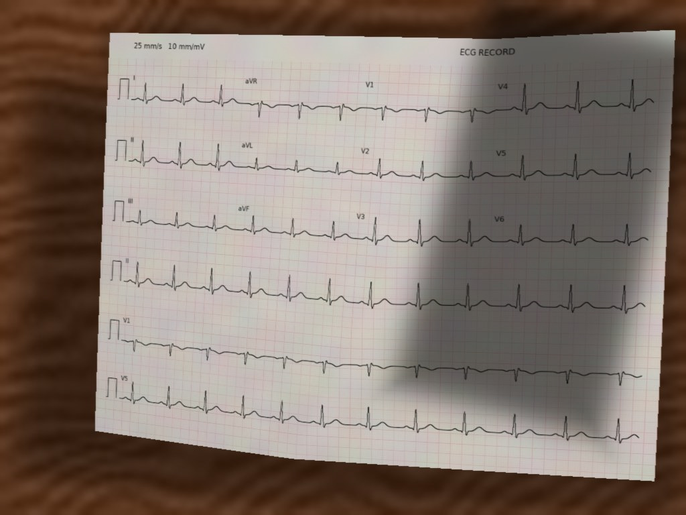

Real signals.
Infinite paper.
Generate ECG prints, photographs and aligned training targets from a batch of 12-lead signals. Keep the rendering inside your training loop and on the same device as your network.

One batch, two sides of the task#
The input is the photographed page. The target is the set of lead traces under the same perspective, crop and paper deformation. Generate both in one call, then train your image model as usual.
from ecg_gpu import ECGSupervisionLayer, RenderConfig
synth = ECGSupervisionLayer(
fs=500, config=RenderConfig(height=384, width=512)
).to(device)
batch = synth(signals) # signals: [B,12,T], mV
logits = unet(batch["image"]) # RGB input: [B,3,H,W]
target = batch["lead_masks"] # soft targets: [B,12,H,W]
Your first image#
Install, render and inspect a batch in a few lines.
02 / PairSupervision that fits#
BW, white traces, per-lead channels and instance boxes.
03 / TrainA real training loop#
Run the small U-Net example and adapt your own model.
04 / MeasureKnow the cost#
Profile the renderer or a complete optimization step.
Choose your level of control#
| Interface | Use it for | Result |
|---|---|---|
ECGImageLayer |
Classification, direct nn.Sequential composition |
RGB tensor |
ECGSupervisionLayer |
Segmentation, detection, paired learning | Dictionary of device tensors |
ECGRenderer |
Geometry maps, scenes, full capture provenance | RenderBatch |
ecg-render |
Files and dataset export | PNG/JPEG, optional NPZ and JSON |
Start with evidence#
This is an ECG image generator. The examples demonstrate rendering and training integration. They do not establish digitization accuracy on real ECG photographs. CPU regression and integration tests are included. Historical T4 results are recorded. The revised paper model needs fresh GPU measurement. Read the validation record and performance guide.